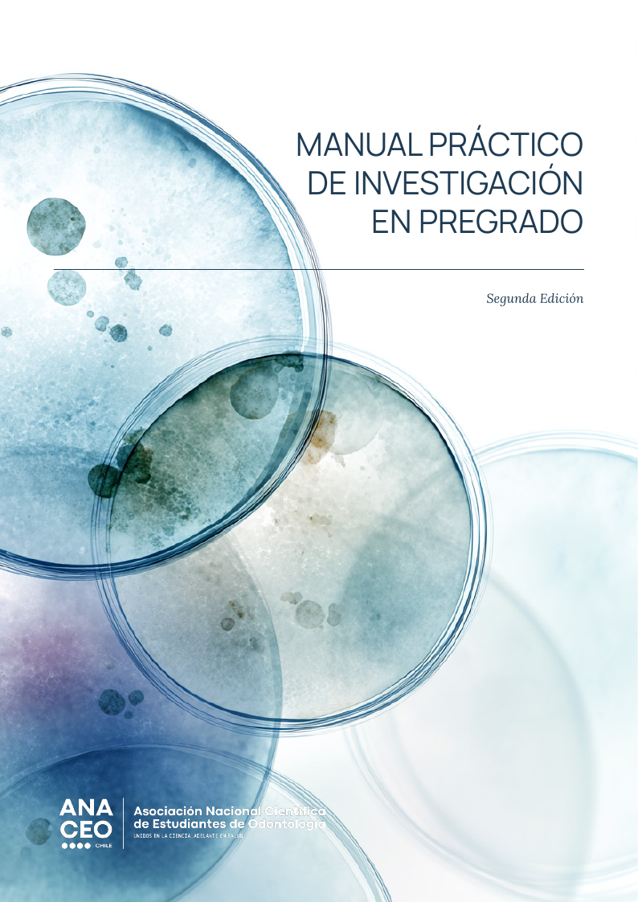

Comprender el proceso
Pregunta de investigación, búsqueda bibliográfica, diseño, ética y planificación.
Material por incorporarRecursos científicos
Una ruta para formular preguntas, encontrar apoyo, desarrollar un trabajo y comunicar sus resultados con rigor.
Ruta de aprendizaje
Estos contenidos orientan; no reemplazan la tutoría académica, la aprobación ética ni los procedimientos de cada universidad.
Pregunta de investigación, búsqueda bibliográfica, diseño, ética y planificación.
Material por incorporarApoyo de la sociedad local, mentoría docente, registro de métodos y análisis.
Encontrar una sociedad →Abstract, póster, presentación oral y oportunidades de reconocimiento estudiantil.
Ver encuentros →Publicación ANACEO
La segunda edición reúne 42 páginas de orientación para estudiantes de odontología y ciencias afines que quieren iniciarse en investigación científica.

ANACEO declara participación estudiantil vinculada a la División Chilena de IADR. Las bases, elegibilidad y plazos deben consultarse siempre en la convocatoria oficial vigente.
Encuentro nacional donde estudiantes pueden compartir trabajos, participar en actividades formativas y conectar con otras sociedades.